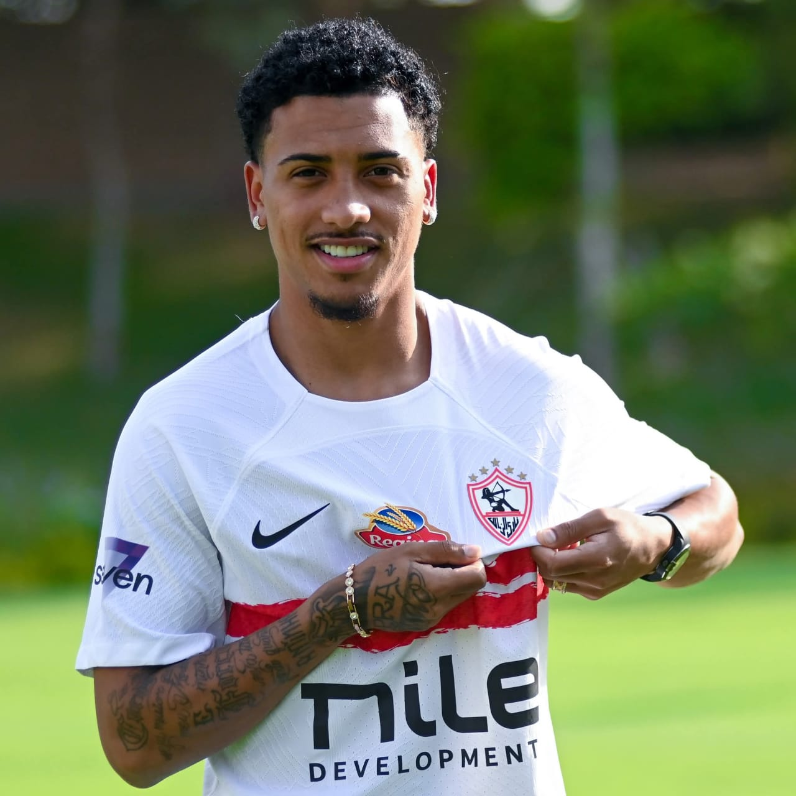
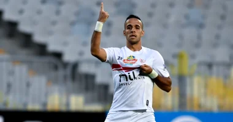
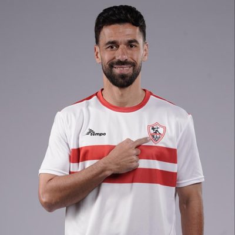
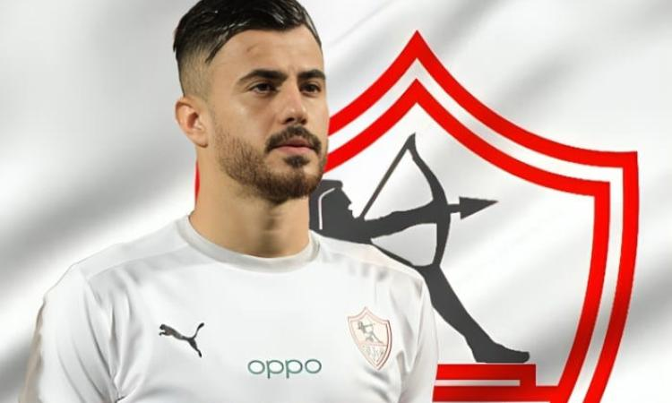
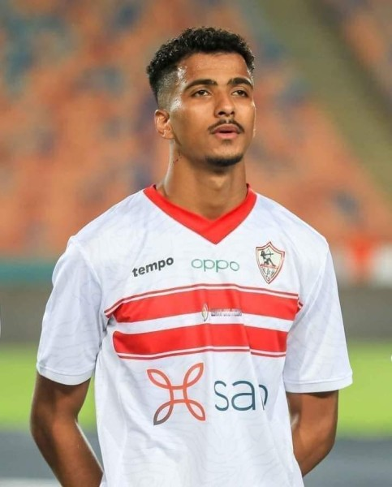
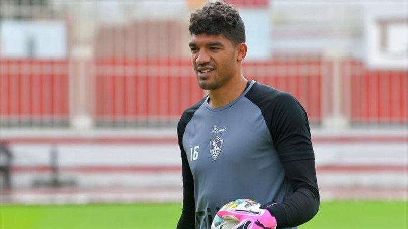
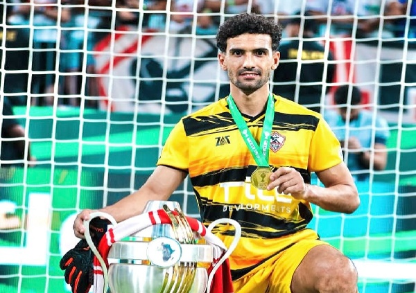

𝓩𝓪𝓶𝓪𝓵𝓮𝓴
Zamalek SC is not just a club; it’s a legacy of pride,
passion, and greatness.
Zamalek’s white jersey shines with history, honor,
and unforgettable victories.
Supporting Zamalek means believing in strength,
loyalty, and champions’ spirit.
From Cairo to the world, Zamalek’s name echoes with pride.
Zamalek is where talent meets ambition and legends are born.
Zamalek doesn’t just play football; it creates moments
that live forever.

⚽️ Bezera
A creative winger with exceptional vision and smart decision-making.

⚽️ Mansy
A fast striker who presses hard and creates constant danger in attack.
⚽️ Fatoh
An attacking full-back known for powerful runs and accurate crosses.

⚽️ Al-Saeed
A midfield leader with experience, calmness, and perfect passing control.

⚽️ El-Wensh
A strong defender who leads the backline with confidence and authority.

⚽️ Abdel-Meguid
A sharp forward with great positioning and finishing ability inside the box.
⚽️ El-Dabbagh
A striker with quick reactions and strong goal-scoring instinct.

⚽️ Sobhi
A reliable goalkeeper who brings stability and confidence to the defense.

⚽️ Awad
A goalkeeper with sharp reflexes and excellent shot-stopping ability.
⚽️ El-Mehdi
A solid defender known for discipline, tackling, and smart positioning.
𝕀𝕗 𝕪𝕠𝕦 𝕨𝕒𝕟𝕥 𝕞𝕠𝕣𝕖 𝕚𝕟𝕗𝕠𝕣𝕞𝕒𝕥𝕚𝕠𝕟 𝕒𝕓𝕠𝕦𝕥 ℤ𝕒𝕞𝕒𝕝𝕖𝕜 𝕊ℂ, 𝕔𝕝𝕚𝕔𝕜 𝕓𝕖𝕝𝕠𝕨:
👉 Visit Wikipedia Page